Design
”想い”を形に。
バナー制作やSNS用画像の作成など、目には見えない“想い”を、ひとつひとつ丁寧に形にしていきます。
使用ツール
photoshop／illustrator／canva
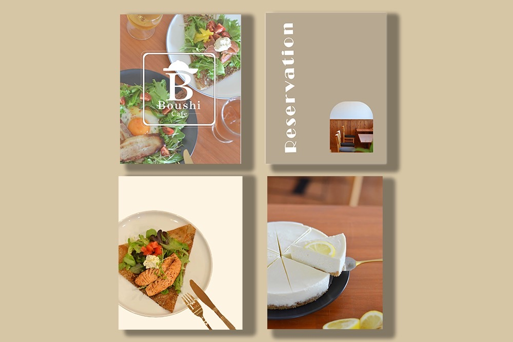
SNS投稿画像の作成>
一宮市の飲食店のインスタグラム投稿画像を作成。お店の雰囲気に合わせたベージュでトーンを統一しつつ、目を惹く華やかなデザインに。
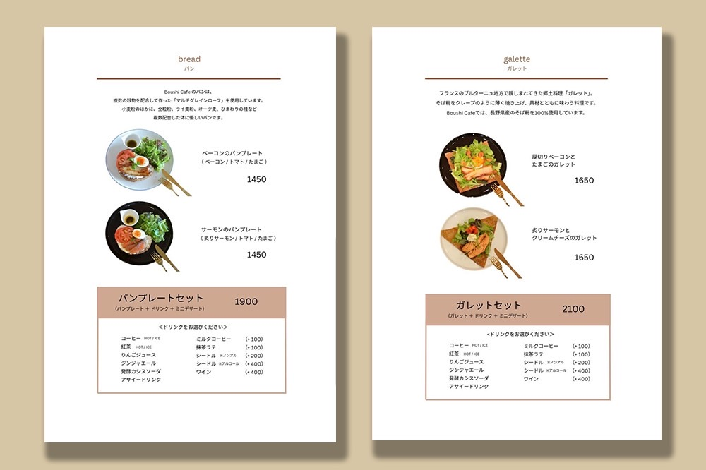
メニュー表の作成>
料理写真を主役に、温かみのあるフォントやカラーで統一。余白を活かし、読みやすさと上質さを兼ね備えたメニュー表に。
Site
”想い”をより多くの人に。
ダンススクールや店舗のホームページを制作。オーナーさまの雰囲気にあわせた、唯一無二のサイトを作り上げます。
使用ツール
HTML／CSS／wordpress
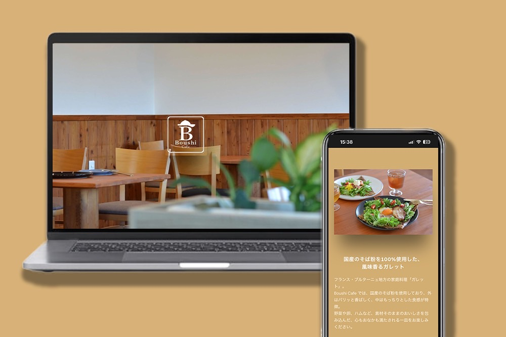
飲食店／愛知県一宮市>
ニューオープンの飲食店の紹介サイトを制作。今後、掲載内容が増えていくことを考慮し、まずはトップページのみのシンプルな構成に。初めてサイトに訪れた人が要点を掴みやすいサイトに。
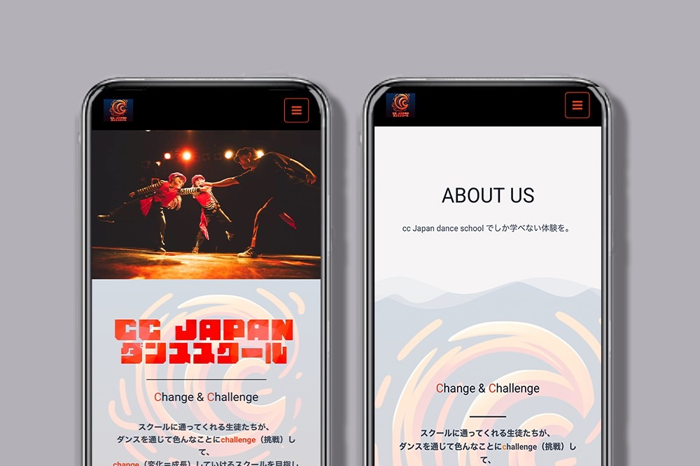
ダンススクール／岐阜県羽島市>
ストリートダンススタジオのサイト制作を担当。「更新しやすいサイトにしてほしい」とのオーナーさまのご要望に沿い、ワードプレスを活用してサイトを制作。
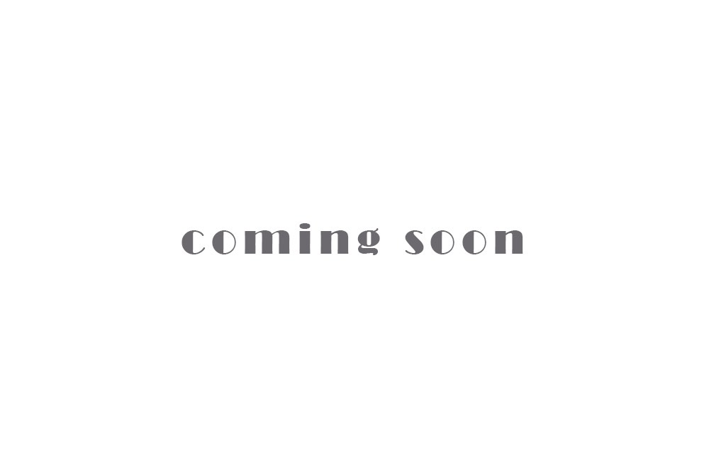
ダンススクール／愛知県日進市>
ジャズダンスとバレエスタジオのサイトリニューアルを担当。現在制作中です。
ポートフォリオサイト>
自身のポートフォリオサイトを制作。
Photo
何気ない日常をずっと忘れたくない。
日ごろから身の回りのあらゆる思い出を写真におさめることが趣味です＾＾
一点にピントをあわせたあたたかい雰囲気の写真が得意です。
撮影カメラ
canon／pentax
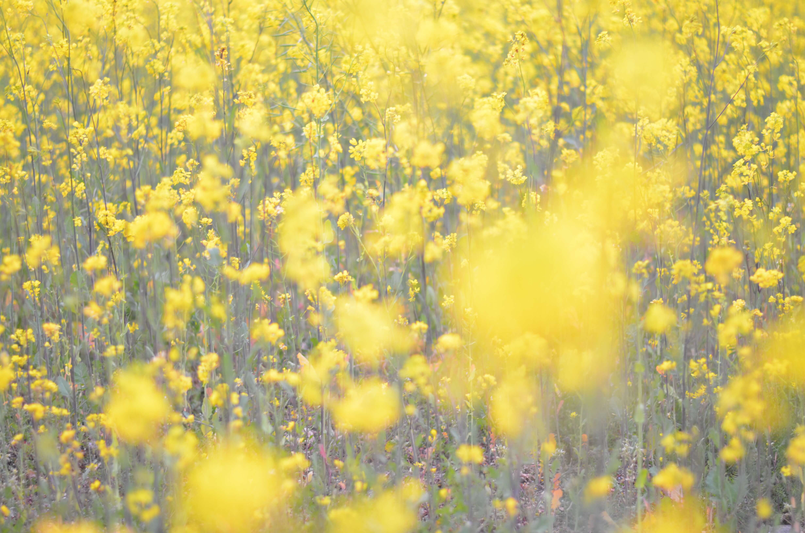
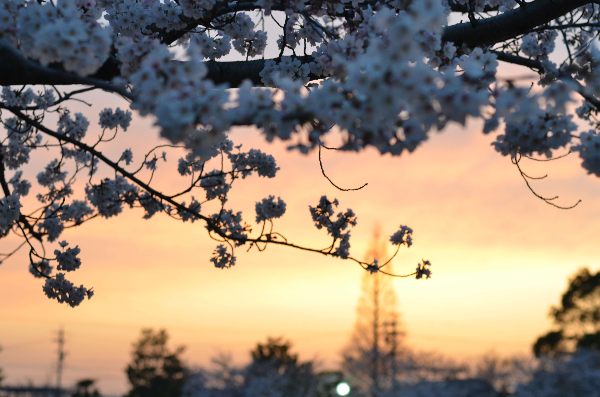
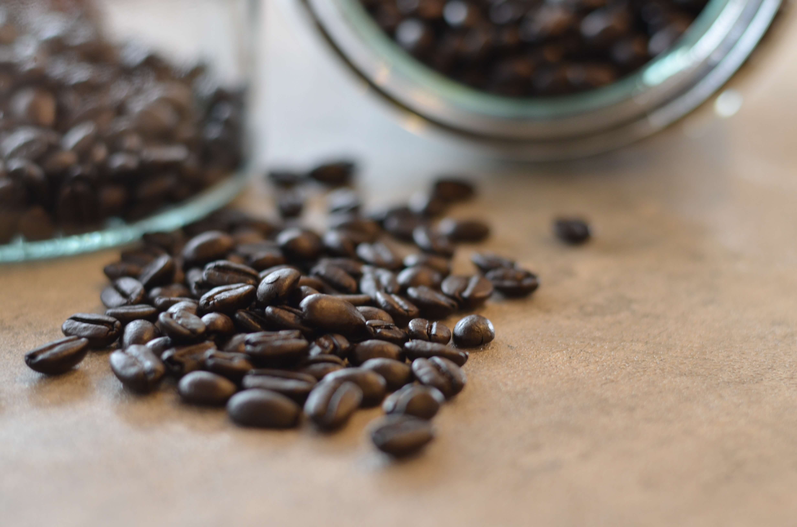
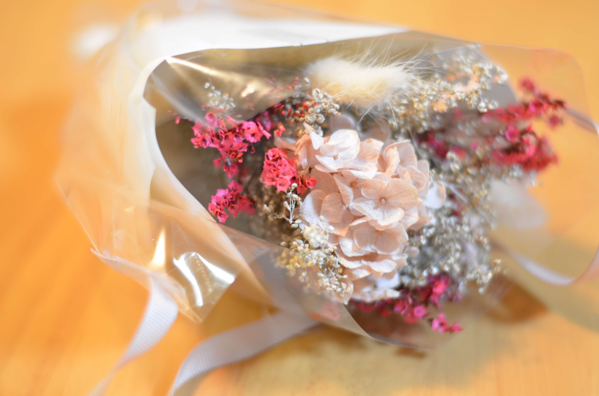
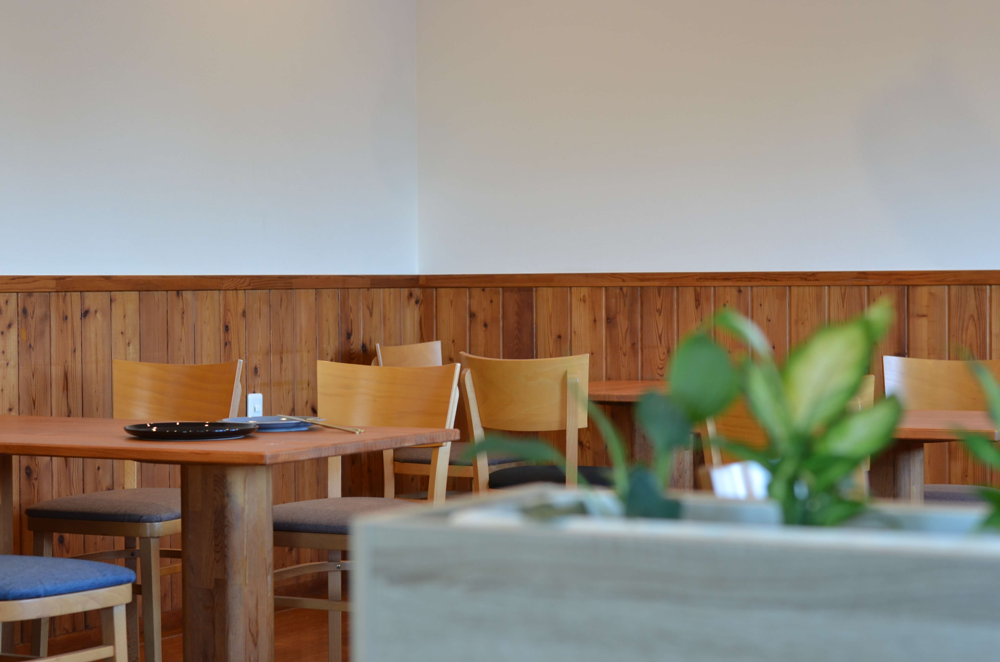
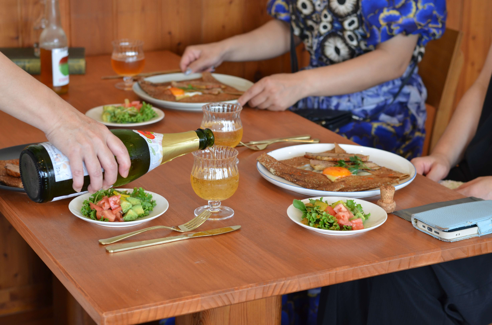
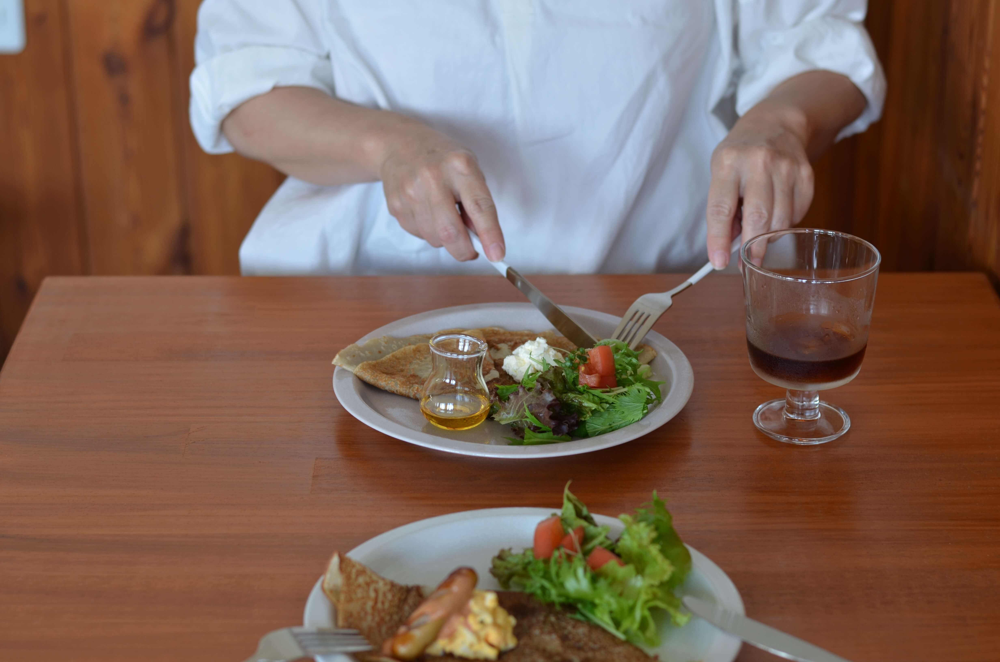
CONTACT
お問い合わせは下記から。
経験を積みながら成長していきたいので、私にできることなら幅広く対応いたします＾＾
お仕事の依頼・ご相談から、「こんなこといっしょにやってみない？」というお誘いも大歓迎です！